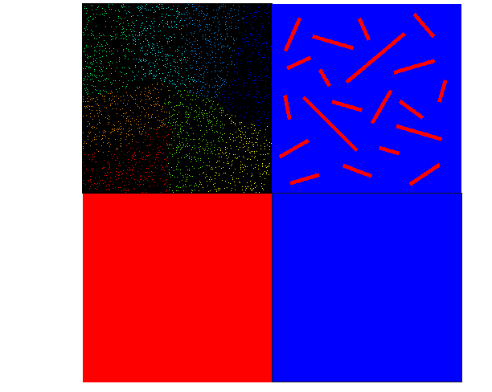

Multifluid/Multiphase Fluidity
An application of the Fluidity Navier-Stokes solver which has been optimized for multiphase/multifluid problems containing large numbers of fluid components or fluid phases.
Provides the dynamic core to the IC-FERST oil reservoir simulator and Darcy porous media flow solver
Simulation tool of choice for the MEMPHIS multiphase EPSRC Programme Grant
Code capabilities: -
Many phase flow
The code utilizes a volume of fluid aproach and is thus not limited to two phase flow interactions.Interfacial tension
Mesh adaptivity
The code leverages the existing three dimensional mesh
adaptivity/mesh optimization capabilities in Fluidity
to solve computationally intractable problems efficiently.  
Applications: - MEMPHIS
Large/Industrial Scale
Flow past a transverse cylinder

Microfluidics
Focused mixing

Applications: - IC FERST
Water flooding problems
Viscous fingering
Fracturing
Applications: - Solid fluid coupling
Recent Publications:
Compressive advection and multi-component methods for interface-capturing - D. Pavlidis, J.L.M.A. Gomes, Z. Xie, J.R. Percival, C.C. Pain and O.K. Matar; International Journal for Numerical Methods in Fluids (2015)
Two-and three-phase horizontal slug flow simulations using an interface-capturing compositional approach - D. Pavlidis, Z. Xie, J.R. Percival, J.L.M.A. Gomes, C.C. Pain and O.K. Matar; International Journal of Multiphase Flow (2014)
Adaptive unstructured mesh modelling of multiphase flows - Z. Xie, D. Pavlidis, J.R. Percival, J.L.M.A. Gomes, C.C. Pain and O.K. Matar; International Journal of Multiphase Flow (2014)
Control volume finite element modelling of segregation of sand and granular flows in fluidized beds - J.R. Percival, D. Pavlidis, Z. Xie, J.L.M. Gomes, M. Sakai, Y. Shigeto, H. Takahashi, O.K. Matar and C.C. Pain; International Journal of Multiphase Flow (2014)
Reservoir Modeling for Flow Simulation by Use of Surfaces, Adaptive Unstructured Meshes, and an Overlapping-Control-Volume Finite-Element Method - M.D. Jackson, J.R. Percival, P. Mostaghimi, B. Tollit, D. Pavlidis, C.C. Pain, J. Gomes, A.H. Elsheikh, P. Salinas, A. Muggeridge and M. Blunt; SPE Reservoir Evaluation & Engineering (2015)
Multiphase flow simulation through porous media with explicitly resolved fractures K. Su, J.-P. Latham, D. Pavlidis, J. Xiang, F. Fang, P. Mostaghimi, J.R. Percival, C.C. Pain and M.D. Jackson; Geofluids (2015)
Anisotropic Mesh Adaptivity and Control Volume Finite Element Methods for Numerical Simulation of Multiphase Flow in Porous Media P. Mostaghimi, J.R. Percival, D. Pavlidis, R.J. Ferrier, J.L.M.A. Gomes, G. Gorman, M.D. Jackson, S.J. Neethling and C.C. Pain; Mathematical Geosciences (2015)